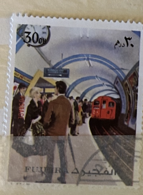
| SOURCE | TITLE| IMAGE MATCH | click to source page |
| Colnect | Stamp: Subway Station (Fujairah (Fujeira)(Traffic) Mi:FU 1289A,Col:FU 1973.03.30-01 📮 | 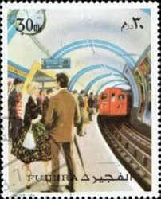 |
| Etsy | Libro de ferrocarril, libro de mariquitas, libros ilustrados, libros antiguos, trenes, ilustraciones, guía de regalos para niños, libros de tapa dura. - Etsy México | 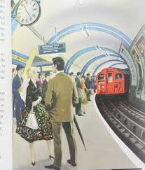 |
| Etsy | Railway Book Ladybird Book, Picture Books Vintage Book Trains Illustrations Childrens Gift Guide Hardbacks. - Etsy Canada | 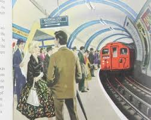 |
| Aukro | Auta od koruny - strana 2 | Aukro | 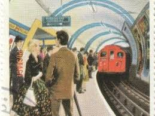 |
| 23 Vintage posters ideas | vintage posters, poster art, vintage travel posters | 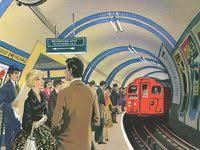 | |
| X | The modern world in old Ladybird books. London's thrilling underground network. “Visitors are always fascinated by the escalators, the brightly-lit stations, and the rush of the trains from the dark tunnels”. Artist: | 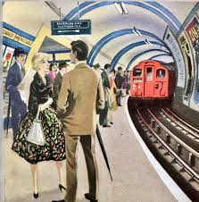 |
| How The Railways Came To Hastings book. *Supplied by Peter Ellingworth* | 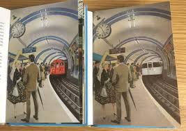 | |
| eBay UK | Fridge Magnet London Underground Piccadilly line . Trafalgar square | eBay UK | 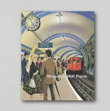 |
| Its good to know your SG history..... ELIZABETH CHOY -SINGAPORE'S WAR HEROINE... | 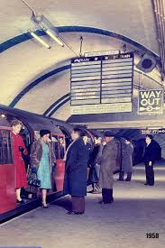 | |
| eBay | London Underground Railway Stations Postcards | eBay | 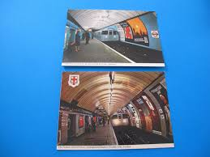 |
| lastdodo.com | Opening of a new Metro line in Cairo 15 (1996) - Egypt - U.A.R. - LastDodo | 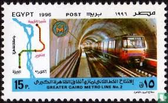 |
| How the new electric trains looked in the 1910's : r/LondonUnderground | 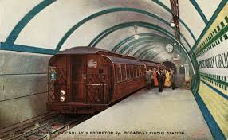 | |
| AbeBooks | Vickers Ltd. Report and Accounts 1958 by Vickers Ltd.: (1959) Manuscript / Paper Collectible | Linda Corrigan | 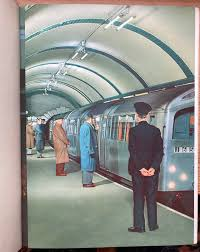 |
| pixels.com | Madrid Old Subway Station Greeting Card by Ana Borras | 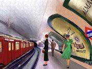 |
| Britain's - Not many people on that platform!Different from nowadays!🇬🇧 | Facebook | 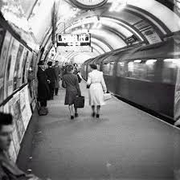 | |
| Subway underground, train | 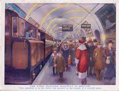 | |
| 68 Best Glasgow Subway ideas | glasgow subway, glasgow, subway | 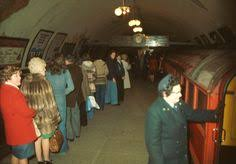 | |
| Album Online | Piccadilly Circus Station, London, 1960-1965. Artist: John Gay - Album alb3975791 | 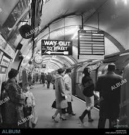 |
| X | 'A London Underground Platform' by Fermin Rocker (1907-2004) (Private collection) | 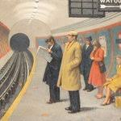 |
| Bridgeman Images | Image of Elizabethan Warship (litho) by McDowell, William John Patton (1889-1950) | 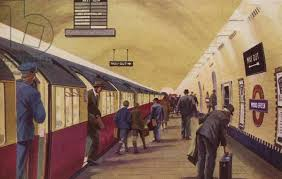 |
| What is the story behind this 1943 Chicago subway view? | 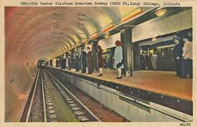 | |
| NeuralEpidural 74: WAKE UP “DO NOT BE DAUNTED BY THE ENORMITY OF THE WORLD'S GRIEF. YOU ARE NOT OBLIGATED TO COMPLETE THE WORK, BUT NEITHER ARE YOU FREE TO ABANDON IT.” @pirkei.avot . . . | 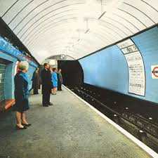 | |
| Alamy | Piccadilly Circus Tube Station, Piccadilly, London, County of London, England. London Underground - Great Northern Piccadilly & Brompton Electric Railway 1910s Stock Photo - Alamy | 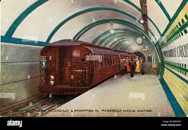 |
| Ubuy Lebanon | London Underground Piccadilly Circus Railway Station Lebanon | Ubuy | 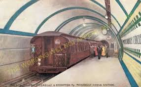 |
| Maudlin House | The Train – Maudlin House | 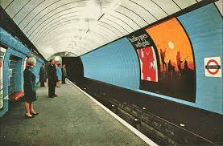 |
| Ondo State Government | My Entire Tumblr | 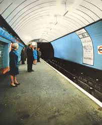 |
| SoundCloud | Stream Mix Room074-DJ Mickey Sir music | Listen to songs, albums, playlists for free on SoundCloud | 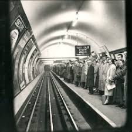 |
| Bridgeman Images | Image of The concourse of Union Station in Chicago, Illinois, 1943 (b/w by Delano, Jack (1914-97) | 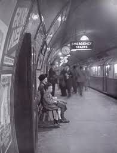 |
| Discover 24 greater the tube London underground and london underground ideas on this Pinterest board | underground, london, london tube and more | 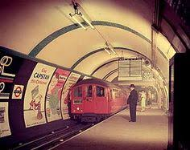 | |
| Media Storehouse | Great Britain Railway Heritage Art Prints, Posters & Puzzles | 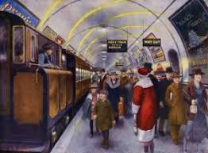 |
| Media Storehouse | Wood Green Station Print, London 1920s. Art Prints, Posters & Puzzles from Mary Evans | 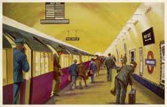 |
| London Transport Museum | B/W print; Passengers waiting for the last train at Piccadilly Circus station by Topical Press, Jan 1952 | London Transport Museum | 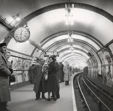 |
| worldwar2collection.com | World War II Footprints | | 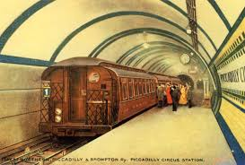 |
| Art.com | Train Arrives at Wood Green Station London' Art Print - William Mcdowell | Art.com | 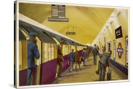 |
| 1900s.org | The travel experience on The London Underground, 1940s-1950s | 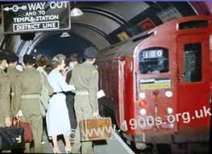 |
| Different, Isn't it? : r/LondonUnderground | 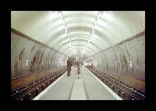 | |
| The National Archives | The National Archives | 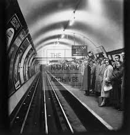 |
| Copland Road Subway Station, Glasgow. (1972) - degahk | 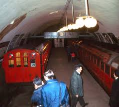 | |
| fengshuinorge.no | London Paperbacks How Does A Tube Station Work At Glenn Ledoux Blog Jamie Oliver Fiction Fiction & Books | 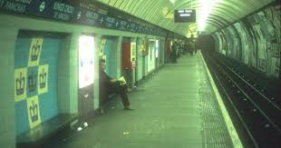 |
| London Transport Museum | London's transport in photographs from 1880 to 2025 | London Transport Museum | 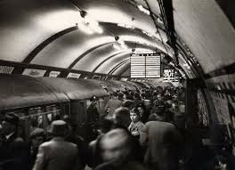 |
| Three-car train of Piccadilly line 1973 stock at Aldwych station (July 1988) – Kevin Lane/Flickr. : r/LondonUnderground - Reddit | 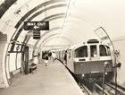 | |
| sota logo ideas | 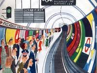 | |
| WordPress.com | Chicago's “Initial System of Subways,” Part 2 | CERA Members Blog | 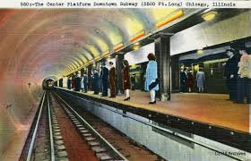 |
| The Museum of Russian Art | Moscow Metro | 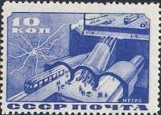 |
| Steve Munro | The Sigmund Serafin Subway Paintings | Steve Munro | 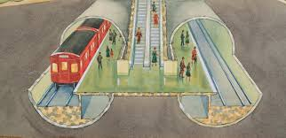 |
| Media Storehouse | Scene on a London Underground Station Print, 1966. Art Prints, Posters & Puzzles from Mary Evans | 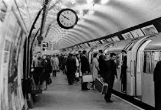 |
| London Transport Museum | B/W print; Northbound Northern line platform no 1, Euston Underground station by Colin Tait, 1960 - 1966 | London Transport Museum | 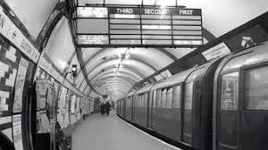 |
| eBay | The Famous Oxford Circus Underground Station Victoria Line London postcard | eBay | 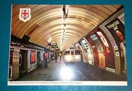 |
| Alamy | 1960s, historical picture of London Underground, a tube train on the Bakerloo line at a platform, people getting on and off the train, London, England, UK. Opened in 1906, the Bakerloo line | 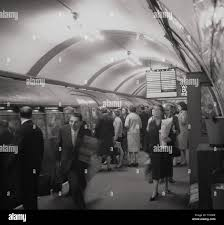 |
| London Transport Museum | B/W print; View down the Piccadilly line platform of South Kensington station by Ministry of Information, Dec 1940 | London Transport Museum | |
| Blogger.com | Europe by London Taxi: Scotland - July 1969 - Glasgow. | |
| Summerlee Transport Group | The 1970s Modernisation - How and Why the Underground was upgraded | |
| The Internet Antique Shop | London England Tube Train Seven Sister Station Cs11890 | |
| It begins… : r/manchester | ||
| A platform of Marble Arch London Underground station, 1900 : r/Colorization | ||
| Flashbak | St John's Wood tube station 1977 - Flashbak | |
| Wikimedia.org | File:Metro Paris - Ligne 1 - Porte Maillot - Installation facades de quai.jpg - Wikimedia Commons | |
| Tumblr | Today we're celebrating the design icon of Baker Street station, particularly platforms 5 and 6. This part of the station dates... – @transportedbydesign on Tumblr | |
| HeLLo everyone!! I hope you're aLL having a LoveLy day. It's the Letter L today in the a-z of Anniversaries on Stamps. Here's my seLection, don't forget to share yours too. Laos - |
{kind=link}